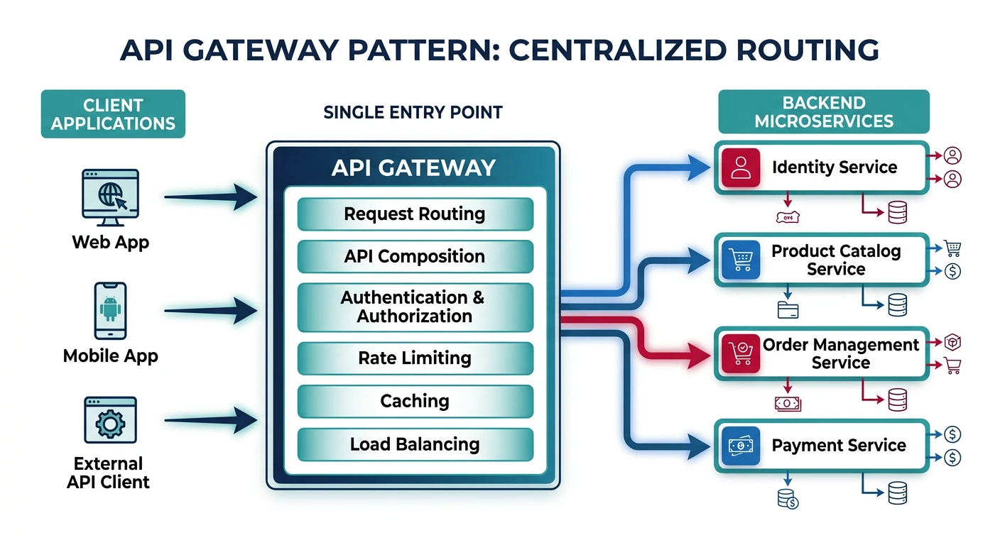
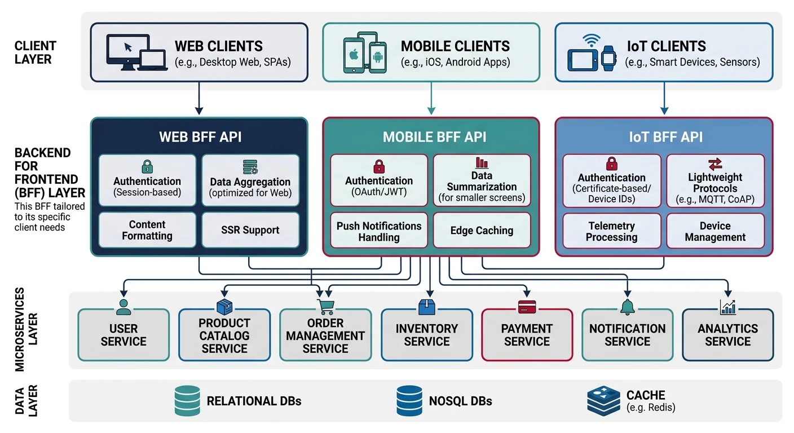
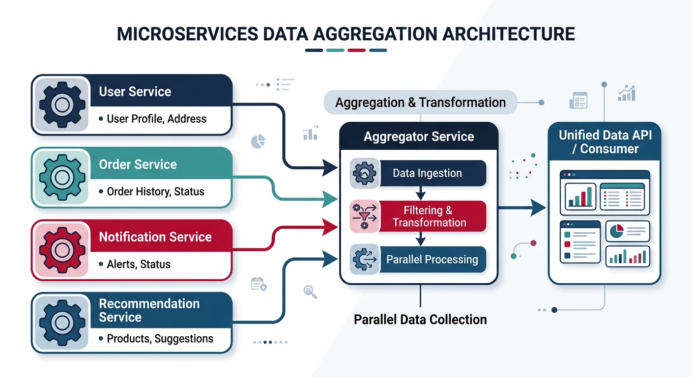
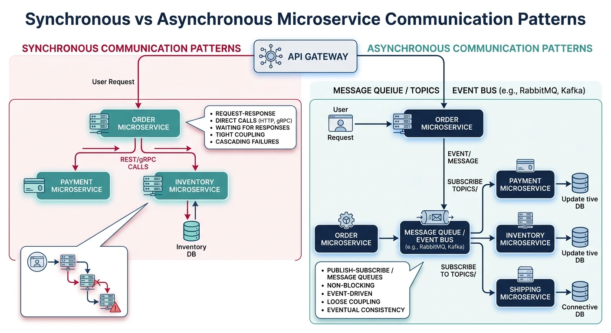
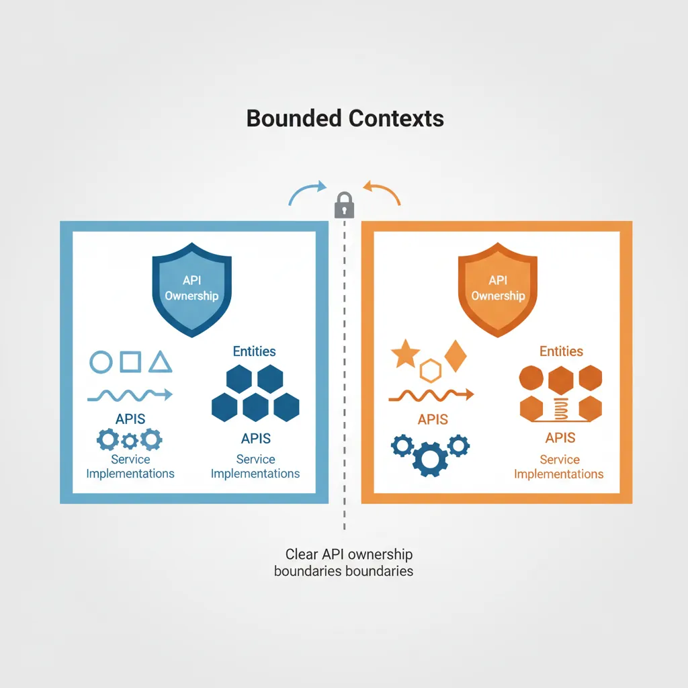

Series Navigation: This is Part 10 of the 17-part API Development Series. Review Part 9: GCP Apigee first.
API Development Mastery
Your 17-step learning path • Currently on Step 10
Backend API Fundamentals
REST, HTTP, status codes, URI designData Layer & Persistence
Database integration, CRUD, transactions, RedisOpenAPI Specification
Contract-first design, OpenAPI 3.0/3.1Documentation & DX
Swagger UI, Redoc, developer portalsAuthentication & Authorization
OAuth 2.0, JWT, RBAC, ABACSecurity Hardening
OWASP Top 10, input validation, CORSAWS API Gateway
REST/HTTP APIs, Lambda integration, WAFAzure API Management
Policies, products, developer portalGCP Apigee
API proxies, monetization, analytics10
Architecture Patterns
Gateway, BFF, microservices, DDD11
Versioning & Governance
SemVer, deprecation, lifecycle12
Monitoring & Analytics
Observability, tracing, SLIs/SLOs13
Performance & Rate Limiting
Caching, throttling, load testing14
GraphQL & gRPC
Alternative API styles, Protocol Buffers15
Testing & Contracts
Contract testing, Pact, Postman/Newman16
CI/CD & Automation
Spectral, GitHub Actions, Terraform17
API Product Management
API as Product, monetization, ecosystemsAPI Gateway Pattern
What is an API Gateway?
An API Gateway is a single entry point for all client requests, handling cross-cutting concerns like authentication, rate limiting, and routing.

Gateway Responsibilities
| Function | Description |
|---|---|
| Request Routing | Route /users/* to User Service, /orders/* to Order Service |
| Authentication | Validate JWT tokens before forwarding requests |
| Rate Limiting | Throttle excessive requests per client/IP |
| Protocol Translation | Convert REST to gRPC for internal services |
| Response Caching | Cache responses at edge to reduce backend load |
| SSL Termination | Decrypt HTTPS at gateway, use HTTP internally |
// Express.js API Gateway example
const express = require('express');
const httpProxy = require('http-proxy-middleware');
const rateLimit = require('express-rate-limit');
const jwt = require('express-jwt');
const app = express();
// Global rate limiting
const limiter = rateLimit({
windowMs: 60 * 1000, // 1 minute
max: 100,
standardHeaders: true
});
app.use(limiter);
// JWT authentication middleware
const authenticate = jwt({
secret: process.env.JWT_SECRET,
algorithms: ['HS256']
}).unless({ path: ['/health', '/auth/login'] });
app.use(authenticate);
// Route to User Service
app.use('/api/users', httpProxy({
target: 'http://user-service:3001',
changeOrigin: true,
pathRewrite: { '^/api/users': '/users' }
}));
// Route to Order Service
app.use('/api/orders', httpProxy({
target: 'http://order-service:3002',
changeOrigin: true,
pathRewrite: { '^/api/orders': '/orders' }
}));
// Route to Product Service
app.use('/api/products', httpProxy({
target: 'http://product-service:3003',
changeOrigin: true,
pathRewrite: { '^/api/products': '/products' }
}));
app.listen(3000, () => console.log('Gateway on port 3000'));Backend for Frontend
BFF Pattern
The Backend for Frontend pattern creates dedicated API layers optimized for specific client types (web, mobile, IoT).

When to Use BFF:
- Different clients need different data shapes
- Mobile needs minimal payloads, web needs rich data
- Clients have different authentication flows
- Teams can work independently per client type
// Mobile BFF - Optimized for minimal bandwidth
// mobile-bff/routes/products.js
const express = require('express');
const router = express.Router();
const productService = require('../services/product');
const imageService = require('../services/image');
// Mobile-optimized product list
router.get('/products', async (req, res) => {
const products = await productService.getProducts({
limit: 20,
fields: ['id', 'name', 'price', 'thumbnailUrl']
});
// Return compact response for mobile
res.json({
items: products.map(p => ({
id: p.id,
name: p.name,
price: p.price,
thumb: imageService.getOptimizedUrl(p.thumbnailUrl, '150x150')
})),
nextCursor: products.nextCursor
});
});
module.exports = router;// Web BFF - Rich data for desktop experience
// web-bff/routes/products.js
const express = require('express');
const router = express.Router();
const productService = require('../services/product');
const reviewService = require('../services/review');
const inventoryService = require('../services/inventory');
// Web-optimized product details with aggregation
router.get('/products/:id', async (req, res) => {
const [product, reviews, inventory] = await Promise.all([
productService.getProduct(req.params.id),
reviewService.getReviews(req.params.id, { limit: 10 }),
inventoryService.getStock(req.params.id)
]);
// Rich response for web
res.json({
...product,
images: product.images.map(img => ({
thumbnail: img.url + '?w=200',
medium: img.url + '?w=600',
large: img.url + '?w=1200'
})),
reviews: {
average: reviews.average,
count: reviews.total,
recent: reviews.items
},
availability: {
inStock: inventory.quantity > 0,
quantity: inventory.quantity,
warehouses: inventory.locations
}
});
});
module.exports = router;Aggregator Pattern
API Aggregation
The Aggregator pattern combines data from multiple microservices into a single response, reducing client roundtrips.

// Aggregator Service
const express = require('express');
const axios = require('axios');
const app = express();
// Aggregate user dashboard data
app.get('/dashboard/:userId', async (req, res) => {
const { userId } = req.params;
try {
// Parallel requests to multiple services
const [user, orders, notifications, recommendations] = await Promise.all([
axios.get(`http://user-service/users/${userId}`),
axios.get(`http://order-service/users/${userId}/orders?limit=5`),
axios.get(`http://notification-service/users/${userId}/unread`),
axios.get(`http://recommendation-service/users/${userId}/products`)
]);
// Aggregate into single response
res.json({
user: {
id: user.data.id,
name: user.data.name,
avatar: user.data.avatarUrl,
memberSince: user.data.createdAt
},
recentOrders: orders.data.items.map(o => ({
id: o.id,
status: o.status,
total: o.totalAmount,
date: o.createdAt
})),
notifications: {
unreadCount: notifications.data.count,
items: notifications.data.items.slice(0, 3)
},
recommendations: recommendations.data.products.slice(0, 4)
});
} catch (error) {
// Graceful degradation
res.json({
user: null,
error: 'Some data unavailable',
partial: true
});
}
});
app.listen(3000);API Composition
Composition vs Aggregation
Pattern Comparison
| Aspect | Aggregation | Composition |
|---|---|---|
| Data Merging | Combines data from services | Orchestrates workflows across services |
| Use Case | Dashboard views, reports | Multi-step transactions |
| Complexity | Read-only, parallel | Write operations, sequential |
// API Composition - Order creation workflow
async function createOrder(userId, cartId, paymentDetails) {
const saga = new Saga();
try {
// Step 1: Validate cart
const cart = await saga.step(
() => cartService.getCart(cartId),
() => {} // No compensation needed
);
// Step 2: Reserve inventory
const reservation = await saga.step(
() => inventoryService.reserve(cart.items),
() => inventoryService.release(reservation.id)
);
// Step 3: Process payment
const payment = await saga.step(
() => paymentService.charge(userId, cart.total, paymentDetails),
() => paymentService.refund(payment.id)
);
// Step 4: Create order
const order = await saga.step(
() => orderService.create({ userId, cart, payment, reservation }),
() => orderService.cancel(order.id)
);
// Step 5: Send confirmation
await notificationService.sendOrderConfirmation(userId, order);
return { success: true, orderId: order.id };
} catch (error) {
await saga.compensate(); // Rollback all steps
throw error;
}
}Microservices API Design
Service Communication Patterns
Sync vs Async Communication:
- Synchronous (REST/gRPC): Real-time queries, immediate response needed
- Asynchronous (Events): Decoupled updates, eventual consistency acceptable

// Event-Driven Communication
const { EventEmitter } = require('events');
const amqp = require('amqplib');
class OrderService {
constructor(messageBroker) {
this.messageBroker = messageBroker;
}
async createOrder(orderData) {
// Create order in database
const order = await this.db.orders.create(orderData);
// Publish event (async communication)
await this.messageBroker.publish('orders', 'order.created', {
orderId: order.id,
userId: order.userId,
items: order.items,
total: order.total,
createdAt: new Date().toISOString()
});
return order;
}
}
// Inventory Service subscribes to order events
class InventoryService {
constructor(messageBroker) {
messageBroker.subscribe('orders', 'order.created',
this.handleOrderCreated.bind(this)
);
}
async handleOrderCreated(event) {
const { orderId, items } = event;
for (const item of items) {
await this.db.inventory.decrement(item.productId, item.quantity);
}
console.log(`Inventory updated for order ${orderId}`);
}
}Domain-Driven Boundaries
Bounded Contexts
Domain-Driven Design helps define clear API boundaries based on business domains.

E-Commerce Bounded Contexts
# Context Map for E-Commerce
contexts:
catalog:
entities: [Product, Category, Brand]
apis: [/products, /categories, /search]
owns: product-service
ordering:
entities: [Order, OrderItem, Cart]
apis: [/orders, /cart]
owns: order-service
fulfillment:
entities: [Shipment, Warehouse, Inventory]
apis: [/shipments, /inventory]
owns: fulfillment-service
customer:
entities: [Customer, Address, PaymentMethod]
apis: [/customers, /addresses]
owns: customer-service
# Relationships
relationships:
- from: ordering
to: catalog
type: customer-supplier # Catalog provides product data
- from: fulfillment
to: ordering
type: conformist # Fulfillment conforms to order structure// Anti-Corruption Layer between contexts
class OrderingAntiCorruptionLayer {
constructor(catalogClient) {
this.catalogClient = catalogClient;
}
// Translate Catalog Product to Ordering domain
async getProductForOrder(productId) {
const catalogProduct = await this.catalogClient.getProduct(productId);
// Map to Order context's view of Product
return {
productId: catalogProduct.id,
name: catalogProduct.title,
price: catalogProduct.pricing.currentPrice,
sku: catalogProduct.inventory.sku,
available: catalogProduct.inventory.quantity > 0
};
}
}Practice Exercises
Exercise 1: Build API Gateway
- Create Express gateway with proxy middleware
- Add JWT authentication middleware
- Implement rate limiting per client
Exercise 2: BFF for Mobile & Web
- Create mobile BFF with compact responses
- Create web BFF with rich aggregations
- Share service clients between BFFs
Exercise 3: Saga Pattern Implementation
- Implement order creation saga
- Add compensation logic for failures
- Test partial failure scenarios